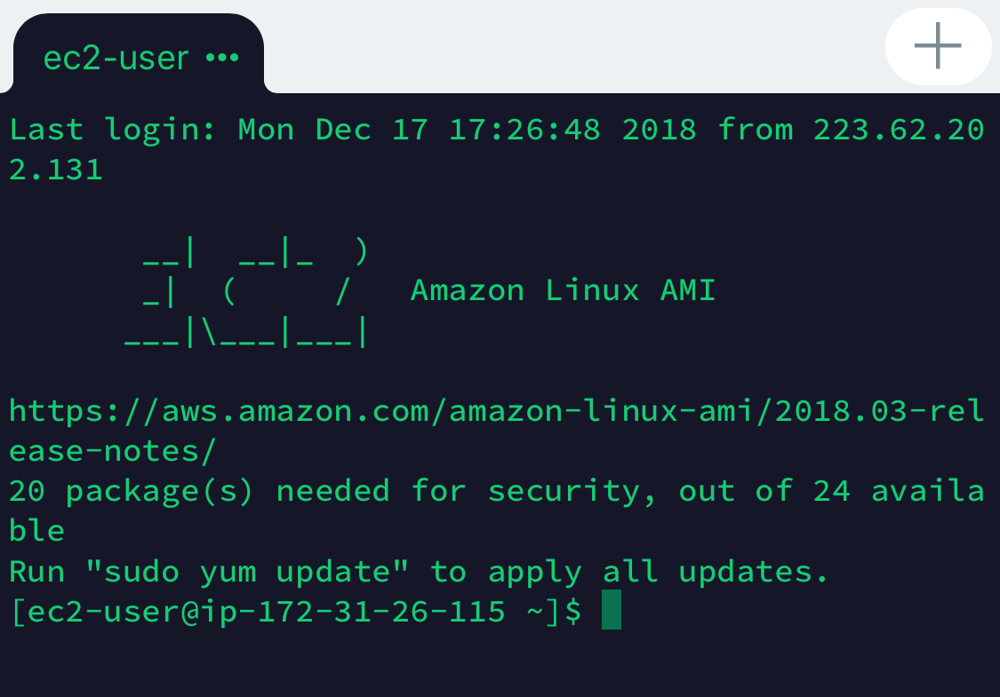
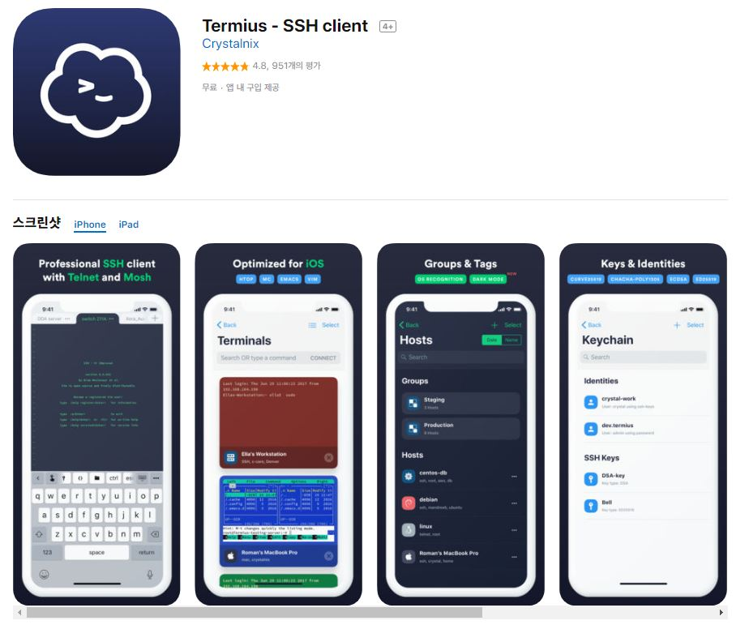
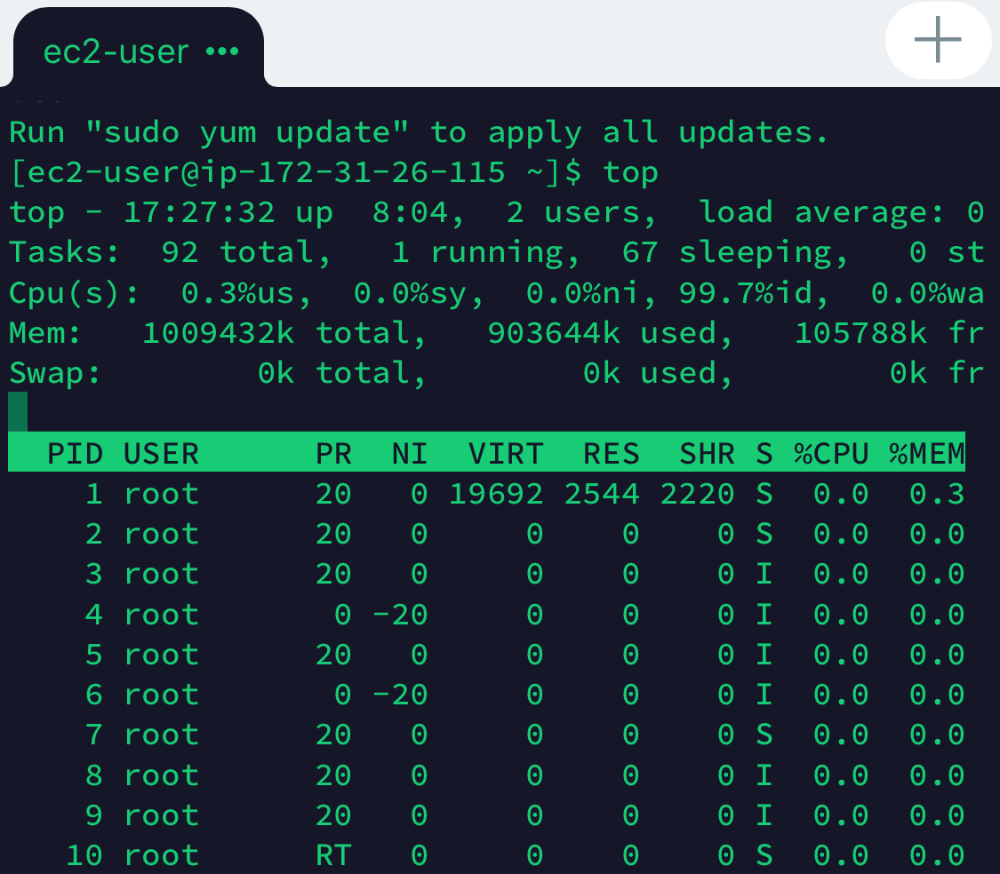
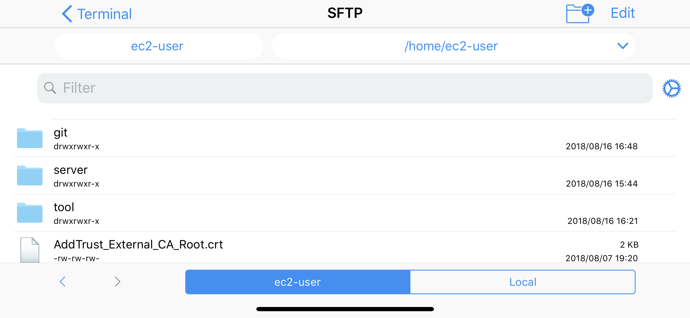

IOS(아이폰/아이패드)에서 터미널(SSH) 사용하기(feat.termius)
*파트너스 활동을 통해 일정액의 수수료를 제공받을 수 있음
얼마전 엄청나고 간편하고 강력한 IOS어플리케이션을 발견했다.
termius라는 어플리케이션인데 IOS에서 terminal을 사용하는 강력한 어플이다.
이 어플리케이션에 대해서 소개하도록 하겠습니다.

TermiusTermius 어플리케이션 소개

IOS에서 SSH접속을 가능하게 해주는 어플리케이션 Termius아이폰 또는 아이패드로 터미널을 통해 SSH접속을 할수있는 어플리케이션입니다.
장점이 있다면 무료이며 또한 광고가 없습니다.
그리고 튜토리얼이 없더라도 어렵지않게 사용할 수 있을것 같습니다.
어플리케이션 구동 및 SSH접속

실제 IphoneX에서 구동하는 장면-02이것은 실제로 어플리케이션을 받고 접속을 시도해본 결과물입니다. 실제로 터미널에서 사용하는것과 똑같이 사용이 가능합니다.
저는 프리티어를 사용하고있는데 가끔 서버가 내려가는일이 있어서 외부에있을때 사용하기에 아주 적절했습니다.

디렉토리를 ui로 확인할 수 있다.디렉토리를 ui로 확인할 수 도있다.
생각보다 작지만 강력한 기능을 구현하는 어플리케이션임을 확인할 수가 있다.
아마 FTP기능도 제공하는 것으로 보인다. 나의 local디렉토리도 보여주는것으로 보아하니 파일전송도 가능한것같다.
그렇다면 아이폰 하나만으로 원격서버를 완벽하게 리모트할수있는 기능이 되기도 하는것 같다.
Quick Start
- Hosts에서 New Host를 등록한다.
- HostName = public IP 등록
- SSH -> USE
- private Key 등록
이와같이 등록을 마친다면 아이폰 / 아이패드 환경에서 터미널환경으로 접속을 할 수 가있습니다.